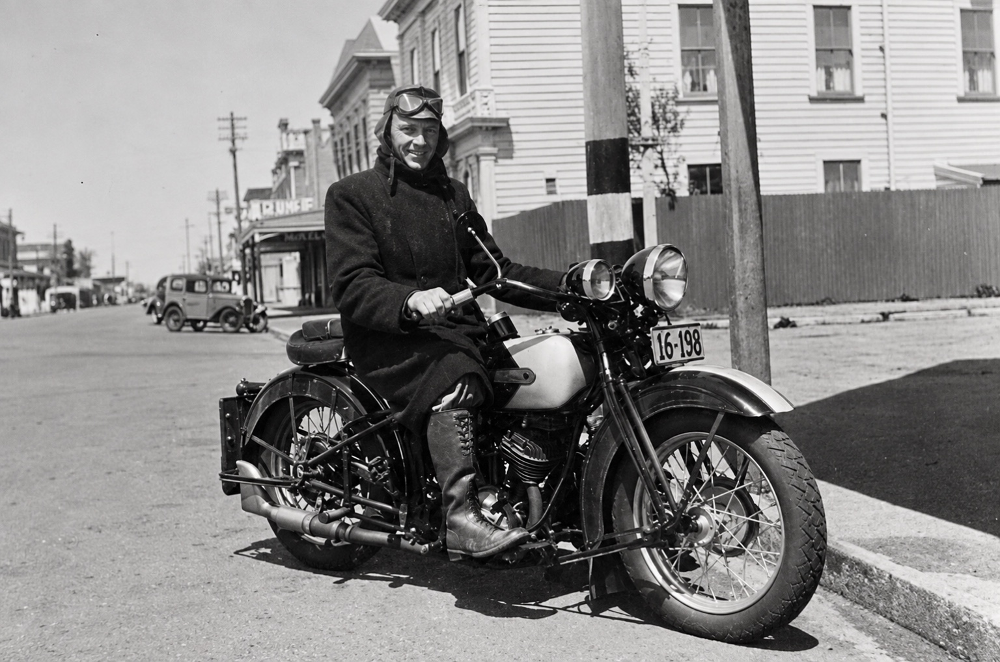
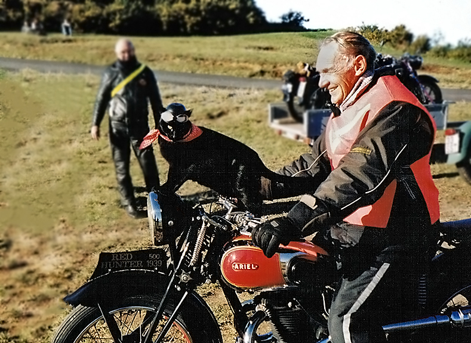
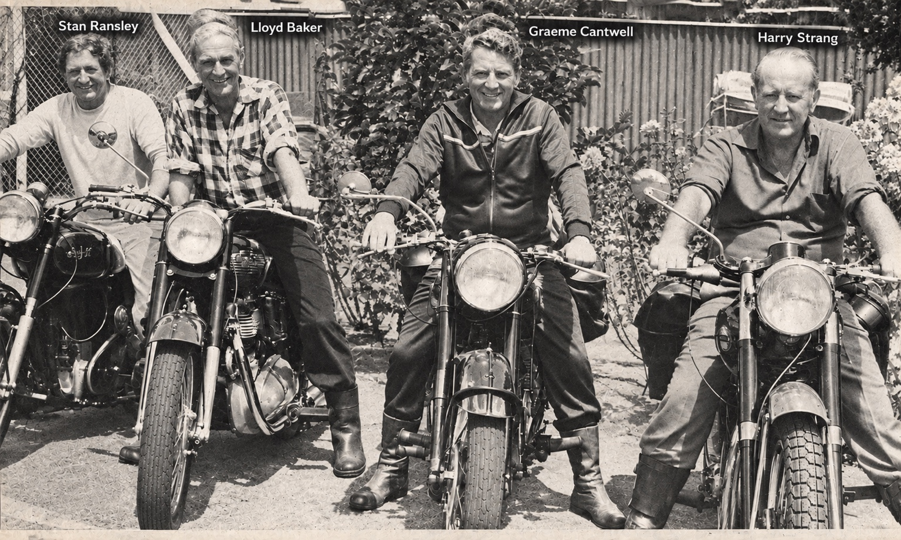
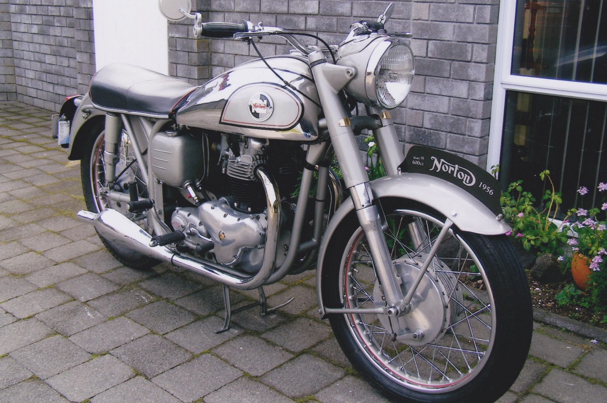

From the historical Club records
Motorcycles, members and moments
A small selection from the Club archive. We’ll add more photographs — and the stories behind them — as the archive grows.




These are only a glimpse of what is held in the Club’s historical material. As members identify motorcycles, people and places, we’ll gradually add the stories that belong with them.
← Back to the archives